연세의 발자취
연세대학교의 역사는 1885년 4월 10일, 한국 최초의 근대식 병원이었던 ‘광혜원’에서
시작되었다. 광혜원은 출범 2주 후 고종이 지어준 ‘제중원’으로 이름이 바뀌었다. 광혜원을
설립한 사람은 의료선교사 알렌이었다. 복음선교사 언더우드는 개원 직전에 내한하여, 제중원의
의료사업을 도우면서 교육사업과 전도사업을 시작하였다. 제중원을 터전으로 한 두 사람의
의료와 교육 사업이 오늘날 연세의 뿌리가 되었다.
이후 의료 분야는 세브란스의학전문학교와 세브란스병원, 세브란스의과대학으로 발전하였으며,
교육 분야는 언더우드학당과 경신학교를 거쳐 연희전문학교, 연희대학교로 발전하였다. 연희와
세브란스는 풍전등화의 위기 속에서 한국의 자주화와 근대화를, 일제 식민지배 하에서는 민족의
독립과 문명화를 위해 노력하였다. 또한 6.25 전쟁의 시련을 견뎌낸 후 민주국가와 근대사회의
건설을 위한 대학의 새로운 책임을 감당하였다.
-
1885.04.10
한국최초의 서양식 병원인 광혜원이 왕립병원으로 개원
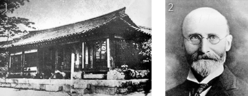1. 연세대학교 의과대학 세브란스병원의 시초, 한국 최초의 현대식 병원 광혜원
2. 광혜원 설립자 호레이스 뉴톤 알렌 (1858-1932) -
1904.09.03
세브란스로부터 기부금 유치하여 최근대식 신축병원 “세브란스 병원” 준공
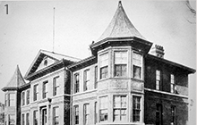1. 완공된 세브란스 병원
-
1942.06
세브란스 의학전문학교, 교명을 ‘아사히 의학전문학교’로 강제변경
-
1944.04
연희전문학교, 교명을 ‘경성공업경영전문학교’로 바꿈
-
1955.03.23
연희대, 세브란스의대 양교합동 최종 결정
-
1899.04
한국 최초의 정규 의학교 제중원 설립, 초대 교장에 에비슨 취임
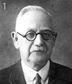 -
1915.03.05
‘조선기독교대학(Chosen Christian College)’을 설립하고
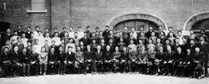
Y.M.C.A에서 개교, 초대교장 원두우, 부교장 에비슨1. 조선기독교대학 창립 기념사진(1915)
-
1942.08.17
연희전문학교를 적산으로 삼아 일제가 강점,
연전 최초 일본인 교장 부임1. 언더우드 동상 수난
- 일제가 언더우드 동상을 빼앗고 그 자리에 돌로
"興亞紀念塔"을 만들어 세웠다. -
1946.08
"연희대학교 학칙 제정 인가, 초대 총장 백낙준 취임4학원, 11개학과 종합대학으로 발족
제중원에서 시작된 연희대학교와 세브란스의과대학은 1957년 마침내 하나로 합쳐져 연세대학교가
탄생하였다. 연희와 세브란스의 통합 이후 연세대학교는 최고의 대학으로 거듭 발전하여 한국의
경제적, 정치적 발전의 동력이 되었고, 대학 교육과 연구 수준을 선도하였다.
원주캠퍼스는 1978년 의과대학 원주분교로 출발하여 점차 학문 영역을 확대하며 대학의 틀을
갖추었고, 1984년 매지리로 이전한 이후 강원 지역의 선도적 캠퍼스로 발전하였다. 또한, 2010년
인천 송도에 국제캠퍼스를 개교하면서 세계적 수준의 교육과 연구력을 갖추기 위한 새로운
도전을 시작하였다. 연세는 캠퍼스(신촌, 의료원, 원주, 국제)간 자율과 융합을 바탕으로,
역동적이고 창조적인 변화를 선도함으로써, 더욱 높은 수준에서 인류와 사회 발전에 계속
이바지하며, 새로운 역사를 만들어가고자 한다.
-
1957.01.05
연희대학교, 세브란스 의과대학 통합 연세대학교로 출발
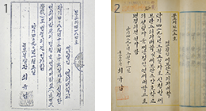1. 연세대학교로 명칭 변경 인가
2. 연세대학교 설립자 변경 인가 -
1962.06.05
의대교사, 간호학교 기숙사 및 세브란스병원 신축 봉헌,
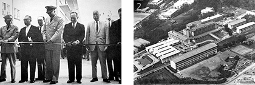
서울역전에서 신촌캠퍼스로 이전
(미국 China Medical Board 기부금과 주한 미군 도움으로 1955년 착공)1. 신촌캠퍼스 봉헌식
2. 1960년 대 신촌 세브란스 -
1981.01.08
원주분교, 원주대학으로 승격. 10개학과
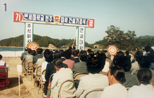
(의예과, 의학과, 보건학과,영어영문학과, 경제학과, 경영학과,
수학과, 물리학과, 화학과, 생물학과)1. 연세대학교 원주대학 건설기공식
-
2005. 5. 4
세브란스 새병원 봉헌식
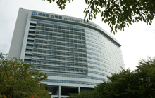 -
2011.09.28
연희전문학교 교기 61년만에 반환
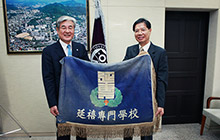 -
2015.10.07
백양로 재창조 봉헌식
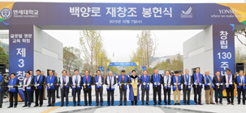
-
1957.03.25
연세대학교 초대 총장에 백낙준, 부총장에 최현배, 김명선 취임
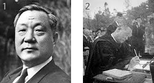1. 연세대학교 초대 총장 백낙준 (1895-1985)
2. 연세대학교 백낙준 초대 총장 취임식 -
1978.10
연세대학교 원주 분교 설립, 보건학과 신설
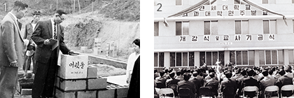1. 원주병원 머릿돌
2. 원주캠퍼스 개강식 -
1985. 5. 11
창립 100주년 기념식
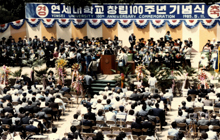 -
2010.03.03
국제캠퍼스 봉헌식
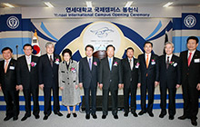 -
2015.05.09
창립 130주년 기념식
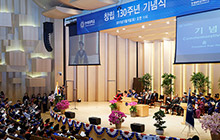